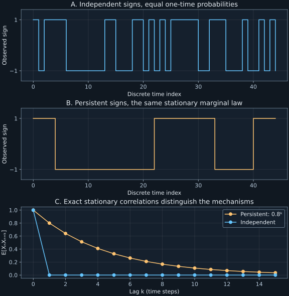

Chapter 5 · Lecture 6
From random variables to Markov state descriptions
A fluctuating device spends half its observed times in each of two states. That histogram is compatible with independent switching, long persistent runs, or a deterministic alternation with a random starting phase. The same occupancy calibration can therefore predict very different waiting and relaxation behavior. The task is to decide which observations make the present state sufficient for predicting the future.
Lecture 6 supplies the hierarchy of joint laws, Markov conditioning, stationarity, transition composition, and the opening master-equation and eigenvalue discussion. Its full caption text and two sampled stills were inspected. This chapter distinguishes time homogeneity from stationarity explicitly; the finite-chain constructions and numerical experiments are added examples.
5.1 A process requires joint laws across times L6 0:31
A stochastic process is a collection of random variables $\{X_t:t\in\mathcal T\}$ on one probability space, indexed by times in a set $\mathcal T$. The time set can be the nonnegative integers or nonnegative real numbers. The state space specifies possible values of each $X_t$. A realization fixes one outcome and gives a path $t\mapsto X_t$. An ensemble consists of all possible realizations with their probabilities.
For ordered times $t_0\lt\cdots\lt t_m$, the joint law assigns probabilities to the entire tuple $(X_{t_0},\ldots,X_{t_m})$. These finite-dimensional laws encode correlations and higher-order dependence. A one-time histogram supplies only one marginal of that hierarchy. Consistency requires that summing over one coordinate recover the joint law of the remaining times.
The probability chain rule is exact before any Markov assumption. For discrete states and histories of positive probability,
$$\Pr(X_{t_0}=i_0,\ldots,X_{t_m}=i_m)=\Pr(X_{t_0}=i_0)\prod_{r=1}^{m}\Pr(X_{t_r}=i_r\mid X_{t_0}=i_0,\ldots,X_{t_{r-1}}=i_{r-1}).\tag{5.1}$$Each factor conditions on the whole known past. The product follows by applying $\Pr(A\cap B)=\Pr(A\mid B)\Pr(B)$ repeatedly. Multiplication here does not assume independence: dependence remains inside the conditionals. Zero-probability histories need not be assigned arbitrary empirical conditional ratios.
Compare independent signs $X_n=\pm1$ with equal probabilities at every integer $n$ against a constant random sign $Y_n=Z$, where $Z$ is selected once with the same two probabilities. Both have zero mean and unit variance at each time. At nonzero lag, $\mathbb E[X_nX_{n+k}]=0$, whereas $\mathbb E[Y_nY_{n+k}]=1$. The one-time law therefore cannot predict even the simplest two-time correlation. Figure 5.1 gives a less extreme persistent example.
5.2 The Markov property is sufficiency of the present state L6 9:57
The property removes earlier observations from each conditional in (5.1). An initial law and transition kernels—the conditional probability rules from a current state—then generate the full joint hierarchy by multiplication. It does not imply that successive states are independent. A chain that stays in its present state with probability 0.9 is strongly persistent, yet the current sign contains all information needed for its next transition.
State choice determines whether this simplification is valid. A deterministic particle obeying $\dot x=v$ cannot have its future position predicted from present position alone if its velocity is unknown. Two particles at the same position with opposite velocities separate immediately. The pair $(x,v)$ is sufficient under a specified deterministic force law with unique solutions. The example motivates state augmentation without claiming that every physical memory kernel can be captured by finitely many extra variables.
A finite exact counterexample makes the same point without differential equations. Let a hidden phase advance deterministically around four states $A\to B\to C\to D\to A$, and observe only $0,0,1,1$ respectively. Start with phase uniform on the four states. If the current observation is zero and the preceding observation was zero, the phase must be $B$, so the next observation is one. If the preceding observation was one, the current phase must be $A$, so the next observation is zero. Present observation alone is insufficient, although the hidden phase process is Markov. Recording the last two observations resolves the phase and restores a sufficient state in this example.
5.3 Constant marginals, homogeneity, stationarity, and mixing L6 14:54
Strict stationarity means that every finite-dimensional joint law is unchanged when all its time arguments undergo the same allowed shift. Constant one-time marginals are necessary but insufficient. To prove insufficiency, take independent fair signs $Z,W$ and define $X_0=X_1=Z$, with $X_n=W$ for every $n\geq2$. Every marginal is a fair sign, but $\Pr(X_0=X_1)=1$ and $\Pr(X_1=X_2)=1/2$. A one-step shift changes a two-time law.
Time homogeneity of a Markov transition rule means that the kernel depends only on elapsed time, rather than the absolute starting time. A fixed discrete transition matrix is homogeneous even when the initial distribution is concentrated in one state and its marginals evolve. Strict stationarity additionally needs an invariant initial law. Calling an autonomous rate rule “stationary” without specifying its initial ensemble conflates these two statements.
For a homogeneous finite-state chain, let $K_{ij}=\Pr(X_{n+1}=i\mid X_n=j)$, with starting state $j$ as the column index. If $p(n)$ is the column of state probabilities at step $n$, total probability gives $p(n+1)=Kp(n)$. A probability column $\pi$ is a stationary distribution when $K\pi=\pi$. Starting the chain with $\pi$ makes each later marginal equal to $\pi$. More strongly, the Markov product formula for a time-shifted tuple uses the same initial marginal and the same elapsed-time kernels, so all finite-dimensional laws are unchanged. This proves strict stationarity for that initialization.
Mixing toward a stationary law here means that transition probabilities lose their initial-state dependence: $(K^n)_{ij}\to\pi_i$ for each pair of states. A strictly stationary process need not mix. The constant random sign example is stationary, but its initial sign is remembered forever. A periodically alternating sign initialized equally is also stationary, yet its lag dependence oscillates forever. Equilibrium occupancy and dynamical loss of memory are separate claims.

5.4 Composition sums over mutually exclusive intermediate states L6 25:32
For a time-homogeneous finite-state chain, define $K_{ij}=\Pr(X_{n+1}=i\mid X_n=j)$. The second index is the starting state; probability vectors are columns throughout this book. Each entry is nonnegative, and each column sums to one. Total probability gives $p_i(n+1)=\sum_jK_{ij}p_j(n)$, or $p(n+1)=Kp(n)$.
Condition on the state $l$ at one fixed intermediate time. The events $X_m=l$ partition all paths into mutually exclusive classes. Markov conditioning gives $\Pr(X_{m+n}=i\mid X_0=j)=\sum_l\Pr(X_{m+n}=i\mid X_m=l)\Pr(X_m=l\mid X_0=j)$. Homogeneity identifies the two factors as elapsed-time kernels. This is precisely matrix multiplication in the stated column convention. Iterating from the one-step kernel gives the powers. The same conditioning proves the continuous-time formula. ∎
The sum is over states at one chosen intermediate time, not over all possible intermediate times. Integrating the same path decomposition over every time would repeatedly count paths rather than form a partition. A renewal equation that integrates over a first event time is a different decomposition, because that first event time is unique for each path.
Composition of observed two-time kernels is a necessary consequence of a Markov model, but pairwise identities alone do not reconstruct every higher-order conditional. The hidden four-phase example fails even the elementary two-step check: its observed one-step matrix has every entry $1/2$, whose square is unchanged. Its actual two-step observation always flips, giving matrix $\left(\begin{smallmatrix}0&1\\1&0\end{smallmatrix}\right)$. A pairwise fit to the one-step data therefore cannot supply a valid Markov prediction.
5.5 A stationary vector is not a convergence proof L6 19:56
A finite chain is irreducible if every state can reach every other with positive probability in some finite number of steps. The period of a state is the greatest common divisor of the positive return lengths; an irreducible chain is aperiodic when that period is one. A finite irreducible chain has a unique positive stationary law, and aperiodicity additionally guarantees convergence from every initial law. This general theorem is cited from the Cambridge Markov-chain notes, PDF page 18. A direct contraction proof for the strictly positive case explains its mechanism.
If $r\varepsilon=1$, every column is the uniform distribution and all differences vanish. Otherwise subtract the constant matrix $\varepsilon\mathbf1\mathbf1^T$ from $K$ and divide by $1-r\varepsilon$ to form another column-stochastic matrix $R$. Because $\sum_i(p_i-q_i)=0$, the constant part cancels and $K(p-q)=(1-r\varepsilon)R(p-q)$. The triangle inequality gives $\|Rv\|_1\leq\sum_{i,j}R_{ij}|v_j|=\|v\|_1$. This proves the contraction. ∎
A stationary vector exists in finite state space: averages $a_N=N^{-1}\sum_{n=0}^{N-1}K^np$ lie in the compact probability simplex and have a convergent subsequence. Since $Ka_N-a_N=(K^Np-p)/N\to0$, its limit is invariant. For positive $K$, the contraction makes that invariant vector unique and drives every initial distribution to it geometrically. This proof supplies a mechanism stronger than merely locating eigenvalue one.
For the two-cycle $K=\left(\begin{smallmatrix}0&1\\1&0\end{smallmatrix}\right)$, the stationary law is $(1/2,1/2)^T$, but a point initial law alternates forever. The additional eigenvalue minus one preserves an oscillation. Adding a probability of remaining in place removes this periodic obstruction; disconnected closed classes would still prevent uniqueness. Infinite state spaces introduce further recurrence and normalization requirements, developed in later chapters.
5.6 From a short-time kernel to a rate equation L6 33:02
For a finite continuous-time state space, assume a homogeneous kernel has expansion $P(h)=I+hQ+o(h)$ as $h\downarrow0$. Here $I$ is the identity matrix, $h$ has time units, and $Q$ is the generator, with inverse-time units. Off-diagonal entries $Q_{ij}$ are transition rates from $j$ to $i$ and must be nonnegative. Column normalization forces $Q_{jj}=-\sum_{i\ne j}Q_{ij}$. Rates are not finite-interval probabilities: a rate can exceed one in inverse-second units.
Insert the expansion into $P(t+h)=P(h)P(t)$, subtract $P(t)$, and divide by $h$. Taking the derivative gives $\dot P(t)=QP(t)$ and hence $\dot p(t)=Qp(t)$ for an arbitrary initial column. Component $i$ gains $\sum_{j\ne i}Q_{ij}p_j$ and loses $p_i\sum_{j\ne i}Q_{ji}$. The homogeneous finite-dimensional solution is $p(t)=e^{tQ}p(0)$. Chapter 6 proves that this exponential remains a probability kernel and develops explicit models.
The generator's spectrum lies in the closed left half of the complex plane. A direct Gershgorin bound proves it. Apply the eigenvector equation to $Q^T$ and choose an eigenvector component of largest magnitude. At its index $j$, division by that magnitude gives $|\lambda-Q_{jj}|\leq\sum_{i\ne j}|Q_{ij}|=-Q_{jj}$. Thus every eigenvalue belongs to at least one disk centered at nonpositive real $Q_{jj}$ with radius $-Q_{jj}$. Every disk lies in the closed left half-plane and touches the imaginary axis only at zero. The relevant set is the union of the disks. Conservation makes zero an eigenvalue.
This bound controls growth, but it does not make a stationary probability unique. A generator with two closed noncommunicating classes has at least two stationary laws. For a fixed finite generator, nonzero modes decay; defective eigenvalues can carry polynomial factors multiplying their decaying exponentials. The long-time limit must still be interpreted using the communicating classes and the initial distribution, rather than inferred from conservation alone.
5.7 Laboratory: test the state description before fitting its dynamics
The lab uses the column-stochastic matrix
$$K=\begin{pmatrix}0.6&0.2&0.1\\0.3&0.5&0.2\\0.1&0.3&0.7\end{pmatrix},\qquad \pi=\frac1{34}\begin{pmatrix}9\\11\\14\end{pmatrix}.\tag{5.2}$$It solves the stationary equations, enumerates every two-step path independently of matrix multiplication, and evolves a point initial distribution. It also computes the hidden four-phase observation's actual one- and two-step matrices and tests a two-state continuous-time semigroup. Run python code/ch05_markov.py; the only effects are writing JSON and text beside the script. There are no network calls or fitted measurements.
Three-state stationary law: 0.264705882, 0.323529412, 0.411764706 n=0: distance=0.735294118 n=1: distance=0.335294118 n=5: distance=0.033404706 n=20: distance=0.000003400
The distance is total variation, half the sum of absolute probability differences from $\pi$. Every entry of $K$ is at least 0.1, so Proposition 5.2 supplies contraction factor 0.7 per step. The actual errors decay faster than that upper bound. A bound and a measured matrix error need not coincide; the bound protects all initial probability columns.
This small program makes the stationary-law check explicit, with no file writes:
import numpy as np
kernel = np.array([[0.6, 0.2, 0.1],
[0.3, 0.5, 0.2],
[0.1, 0.3, 0.7]])
stationary = np.array([9, 11, 14])/34
assert np.allclose(kernel.sum(axis=0), 1)
assert np.allclose(kernel @ stationary, stationary)
print("Normalization and stationarity pass.")Normalization and stationarity pass.
The observed-cycle test has a different purpose: it checks whether the chosen state admits any valid first-order homogeneous Markov model with the fitted one-step kernel. Its failure cannot be repaired by more accurate matrix exponentiation. The state must first retain enough information.
5.8 What a Markov state captures and misses
The Markov model compresses a hierarchy of conditionals into an initial law and a transition rule because the present state is sufficient. Histograms alone do not justify that compression. A sampled trajectory can also fail to reveal a hidden slow variable over the observation interval, so an empirically plausible Markov approximation still needs tests at multiple lags and relevant initial ensembles.
Time homogeneity describes the rule; strict stationarity describes the ensemble; an invariant vector is a candidate stationary initialization; mixing is a convergence property. Keeping these statements separate prevents equilibrium assumptions from entering a transient calculation unnoticed. Infinite state spaces, nonexponential residence times, and coarse observations require additional care. Chapter 22 separates a jump chain from its physical clock, and chapter 23 develops a non-Markov transport example.
5.9 Exercises with worked solutions
Exercise 5.1 — Homogeneous does not mean stationary (conceptual)
A two-state chain has $K=\left(\begin{smallmatrix}0.9&0.1\\0.1&0.9\end{smallmatrix}\right)$ and starts in state one with probability one. Is it homogeneous? Is it strictly stationary? Find its one-step law.
Worked solution
The fixed kernel is time homogeneous. Its initial column is $(1,0)^T$ and its next column is $(0.9,0.1)^T$, so its one-time marginal changes and it is not strictly stationary. The stationary column is $(1/2,1/2)^T$. Starting with that column would make the whole homogeneous Markov process stationary by the joint-law product argument, not merely make one histogram constant.
Exercise 5.2 — Stationarity does not remove hidden memory (conceptual)
For the uniformly initialized phase cycle with observations $0011$, compute $\Pr(Y_{n+1}=1\mid Y_n=0)$ and the same probability conditioned also on $Y_{n-1}=0$. Explain why stationarity does not settle the Markov question.
Worked solution
Conditioning only on a zero observation leaves phases $A,B$ equally likely. Their next observations are zero and one respectively, so the first probability is $1/2$. Conditioning on consecutive zeros forces phase $B$ and makes the probability one. Uniform phase is invariant under deterministic cycling, so the observed joint laws are time-shift invariant. The failure comes from predictive information in the preceding observation, not from a changing ensemble. Augmenting the observed state to the last two bits distinguishes all four phases.
Exercise 5.3 — Correlation of persistent signs (derive)
Let a sign process stay unchanged with probability $1-r$ and flip with probability $r$, independently of its earlier history given its present sign, where $0\lt r\lt1$. Derive its stationary covariance at lag $k$.
Worked solution
The symmetric stationary law assigns equal sign probabilities, with mean zero and variance one. Conditional expectation gives $\mathbb E[X_{n+1}\mid X_n]=(1-2r)X_n$. Iterating this conditional identity yields $\mathbb E[X_{n+k}\mid X_n]=(1-2r)^kX_n$. Multiplying by $X_n$ and averaging gives covariance $(1-2r)^k\mathbb E[X_n^2]=(1-2r)^k$. For $r=0.1$ this is $0.8^k$, as in Figure 5.1. At $r=1/2$ signs become independent; as $r\uparrow1$, the increasingly slow decay alternates in sign. At the excluded endpoint one, periodicity prevents decay altogether.
Exercise 5.4 — Two-step path enumeration (derive)
For (5.2), compute the probability of going from state one to state three in two steps by listing intermediate states. Check the column convention.
Worked solution
The three contributions are $K_{31}K_{11}=0.1(0.6)=0.06$, $K_{32}K_{21}=0.3(0.3)=0.09$, and $K_{33}K_{31}=0.7(0.1)=0.07$. Their sum is 0.22. This is entry $(3,1)$ of $K^2$: its column is the initial state and row the final state. The alternatives are mutually exclusive intermediate states. Multiplying the reverse-index entries would describe different paths and generally give a different answer.
Exercise 5.5 — Bound relaxation before computing it (compute/design)
Use Proposition 5.2 for the matrix (5.2) to bound the total-variation error at twenty steps from a point start. Compare with the lab. Does the bound certify an error below 0.001?
Worked solution
There are three states and minimum entry 0.1, so the contraction factor is 0.7. Total variation contracts by the same factor as the one-norm. Starting in state one gives distance $1-9/34=25/34$. Thus the bound is $(25/34)(0.7)^{20}\lt(0.7)^{20}\lt0.001$, since the last power is below one thousandth. The lab's actual value is 0.000003400, smaller still. The bound certifies the requested tolerance without depending on this exact initial eigenmode decomposition; it does not estimate the actual error sharply.
Exercise 5.6 — A generator's conserved mode (compute/design)
For $Q=\left(\begin{smallmatrix}-2&1\\2&-1\end{smallmatrix}\right)$ in inverse seconds, find its stationary law and eigenvalues. Starting in state one, derive its law at time $t$. State a check that catches a transposed generator.
Worked solution
Column sums vanish and $Q\pi=0$ gives $2\pi_1=\pi_2$, so $\pi=(1/3,2/3)^T$. The trace is minus three and determinant zero, yielding eigenvalues zero and minus three. Conservation makes $p_2=1-p_1$, so $\dot p_1=1-3p_1$ and $p_1(t)=1/3+(2/3)e^{-3t}$, with $p_2(t)=2/3-(2/3)e^{-3t}$. Both are nonnegative and sum to one. Check the derivative at zero, $\dot p(0)=(-2,2)^T$, against the declared outgoing rate from state one. Transposing without changing the column convention gives nonzero column sums and fails probability conservation.
5.10 Sources and attribution
- V. Balakrishnan, Stochastic processes and the master equation, lecture 6, IIT Madras, and official notes, PDF47–51. These supply the joint-law, conditioning, and rate-equation spine.
- John Sylvester, Nicolás Rivera, Luca Zanetti, and Thomas Sauerwald, Cambridge, Lecture 2: Markov Chains, Lent2019, PDF18: finite irreducible aperiodic convergence theorem. The reference uses rows; this chapter consistently transposes that convention to columns.
The positive-kernel contraction, hidden-state example, and laboratory are developed here. Strict stationarity and homogeneity are separated more explicitly than in the source terminology. Gershgorin localization uses the union of disks and does not establish a unique stationary law.